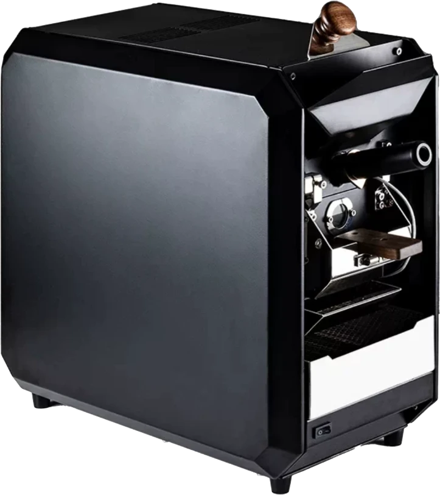
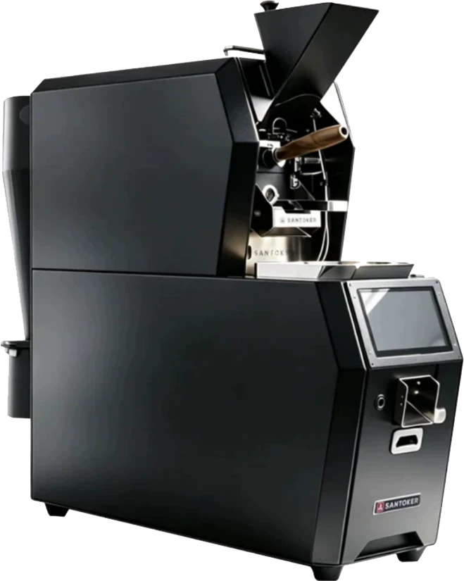

三豆客 X3 直火機
SANTOKER X3 · DIRECT HEAT
負責中深焙。直火式加熱讓熱能直接傳到滾筒與豆子，升溫明快、熱量集中，烘出厚實的醇度與飽滿的焦糖、可可香氣。
OUR STORY / A LITTLE MORE CARE
我們喜歡咖啡裡清楚的香氣、自然的甜感，以及喝完後仍想念的餘韻。一遇的日常，是從產區、挑選到烘焙，把每一個小細節照顧好。

01 / OUR STORY
「一遇」的名字，來自我們對咖啡最單純的想像：每一杯，都是一次值得好好對待的相遇。從產區的風土、豆子的挑選，到烘焙的火候，我們把能做好的細節一一做好。
我們不追求複雜的說法，只希望你打開袋子時聞到乾淨的香氣，喝下第一口時感覺到自然的甜感，放下杯子後，還想再來一杯。
02 / CLEAN BEANS
一包咖啡豆裡只要混進幾顆發霉、蟲蛀或發育不良的瑕疵豆，就可能帶來雜味與澀感，蓋過原本的花果香與甜感。所以我們從產地到烘焙後，一共挑豆四次，其中加入 AI 光學辨識，把肉眼容易漏掉的瑕疵也挑出來。
AI SORTING
生豆通過圓展 AVerCasso AI 挑豆機時，系統會依據色澤與外觀逐顆判讀，把顏色異常、破損或有瑕疵的豆子即時剔除。機器負責又快又穩定的初步篩選，再由人工細看，兩者互補。
從果實開始，挑選成熟與完整的原料，做好風味的第一道把關。
以 AI 光學辨識逐顆判讀生豆的色澤與外觀，剔除顏色異常與有瑕疵的豆子。
再以手工檢視細節，挑出破裂、形狀與發育異常的豆子。
冷卻後再次檢視熟豆，讓挑選的用心延續到最後一刻。
03 / ROASTING
不同產區、不同處理法的豆子，各有適合的火候。我們依豆子的個性決定焙度與加熱方式，淺中焙交給熱風機，中深焙交給直火機，再在收到訂單後才開始烘，讓你喝到的，是這支豆子最好的樣子。


SANTOKER X3 · DIRECT HEAT
負責中深焙。直火式加熱讓熱能直接傳到滾筒與豆子，升溫明快、熱量集中，烘出厚實的醇度與飽滿的焦糖、可可香氣。
SANTOKER RX700 · HOT AIR
負責淺中焙。以熱風包覆豆子均勻受熱，風味乾淨、層次清楚，更能展現花果香氣與明亮的酸質。